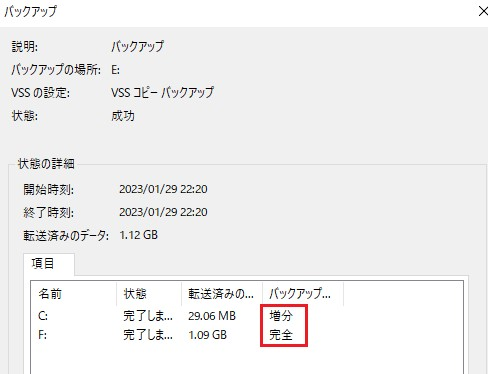
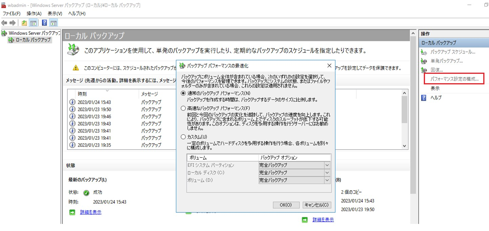

本記事は、マイクロソフト社員によって公開されております。
こんにちは、Windows サポートチームの三浦です。
本日は Windows Server バックアップの完全バックアップ/増分バックアップの概要や設定方法、意図せず完全/増分バックアップが実行されてしまうシナリオについて紹介させていただきます。
完全バックアップと増分バックアップの概要
Windows Server バックアップでは、完全バックアップと増分バックアップによるバックアップをそれぞれサポートしております。
完全バックアップでは、バックアップ対象のデータをすべて転送いたします。
一方、増分バックアップでは、前回のバックアップから変更・追加のあったデータのみを転送しますので、完全バックアップと比較して、バックアップ処理の所要時間を低減することが可能です。
なお、実行したバックアップが完全/増分のどちらのバックアップであったかは、バックアップの実行履歴をダブルクリックすることで確認が可能です。

設定方法
既定では、ボリューム単位のバックアップでは完全バックアップが実行される設定となっており、下記の [パフォーマンス設定の構成] 画面から設定の変更が可能です。
また、本設定は、GUI からのバックアップだけではなく、wbadmin コマンドなどでのコマンド ベースでのバックアップにも適用されます。

[通常のバックアップ パフォーマンス] : 完全バックアップでバックアップが実行されます。
[高速なバックアップ パフォーマンス] : 増分バックアップでバックアップが実行されます。
[カスタム] : ボリューム別に完全/増分バックアップの指定が可能です。
なお、上記の設定はボリューム単位のバックアップでのみ有効であり、ファイル単位のバックアップでは、完全/増分バックアップを制御する方法はございません。
意図せず完全バックアップが実行される場合
増分バックアップの設定を行っているにもかかわらず、意図せず完全バックアップが実行されてしまう場合は、下記のいずれかのシナリオに該当している可能性がございます。
シナリオ 1.
Windows Server バックアップでは、バックアップの健全性の確保のため、増分バックアップの設定を行っている場合であっても、一定の条件に合致した場合に完全バックアップが実行される場合がございます。
完全バックアップが実行される主な条件としては下記がございます。
・前回の完全バックアップから 14 日以上経過しており、かつ、14 回以上の増分バックアップが実行されている場合
・前回のバックアップからの変更がそのボリュームのバックアップ全体の 50 % を超えている場合
・既存のバックアップ データに問題があることが検出された場合
・前回のバックアップが成功していないことを検出した場合
増分バックアップの設定を行っている場合であっても、これらの条件を満たした場合には、完全バックアップが実行される場合がございます。
シナリオ 2.
バックアップ対象ボリュームのシャドウ コピーを削除した場合には、増分バックアップの設定を行っていても、完全バックアップが実行される可能性がございます。
Windows Server バックアップでは、バックアップ実行時にボリュームの静止点を確保するため、バックアップ対象ボリュームのシャドウ コピーを作成し、このシャドウ コピーを元にバックアップ データを転送いたします。
完全バックアップが設定されている場合、バックアップ完了時にこのシャドウ コピーを削除する仕組みとなっておりますが、増分バックアップの設定を行うと、このシャドウ コピーを削除せずに保持するように動作が変更されます。(直近のバックアップ時に作成されたシャドウ コピーのみが保持され、過去のバックアップ時に作成されたシャドウ コピーについては削除されます。)
上記で保持したシャドウ コピーを利用して前回バックアップ時からの増分データを検出することで、増分バックアップを実現しております。
バックアップ対象ボリューム上のシャドウ コピーが削除されると、前回バックアップ時からの増分データの検出ができない状況となるため、完全バックアップが実行されます。
※ ファイル単位でのバックアップは上記とは異なり、USN ジャーナルと呼ばれるファイルを利用して増分バックアップを実現しておりますので、シャドウ コピーの削除による影響は受けません。
シナリオ 3.
Windows Server バックアップでは、ReFS ファイル システムの増分バックアップをサポートしておりませんので、バックアップ対象が ReFS でフォーマットされている場合は、完全バックアップでバックアップが実行されます。
意図せず増分バックアップが実行される場合
上述の通り、完全バックアップが実行された場合、バックアップ対象ボリュームのシャドウ コピーの削除を行う仕組みとなっておりますが、この際のシャドウ コピーの削除が何らかの原因で失敗するなどして残存した場合、その後のバックアップが増分バックアップで実行されてしまう場合がございます。
完全バックアップの設定を行っているにもかかわらず、ボリューム単位のバックアップが増分バックアップで実行される場合は、下記の手順でシャドウ コピーの確認・削除をご実施いただくことで、事象を解消できる可能性がございます。
- 管理者権限のコマンド プロンプトを起動し、下記のコマンドを実行して Diskshadow を起動します。
1
diskshadow
- 続いて下記のコマンドを実行し、保持しているシャドウ コピーを確認します。
1
list shadows all
※ [元のボリューム名] がシャドウ コピーの対象ボリュームとなります。下記例の場合、E ドライブのシャドウ コピーを保持しているとご判断ください。1
2
3
4
5
6
7
8
9
10
11
12
13
14
15DISKSHADOW> list shadows all
コンピューター上のすべてのシャドウ コピーを照会しています...
* シャドウ コピー ID = {66f52f76-6ac2-46b0-8160-6ee32c7da178} <No Alias>
- シャドウ コピー セット: {305fd2bb-9a64-4775-9444-7f024af2c562} <No Alias>
- シャドウ コピーのオリジナル カウント数 = 1
- 元のボリューム名: \\?\Volume{afdd4c4b-9dfd-46e8-9697-72262ec00f6f}\ [E:\]
- 作成時間: 2023/01/27 10:56:00
- シャドウ コピー デバイス名: \\?\GLOBALROOT\Device\HarddiskVolumeShadowCopy1
- 作成元のコンピューター: WIN-9QD96QOMPTG
- サービス コンピューター: WIN-9QD96QOMPTG
- 露出されていません
- プロバイダー ID: {b5946137-7b9f-4925-af80-51abd60b20d5}
- 属性: No_Auto_Release Persistent Differential - 意図せず増分バックアップが実行されてしまうボリュームのシャドウ コピーが存在する場合は、下記のコマンドを実行して該当ボリュームのシャドウ コピーを削除します。
1
delete shadows volume <Volume>
// 実行例1
2
3
4
5DISKSHADOW> delete shadows volume E:
プロバイダー {b5946137-7b9f-4925-af80-51abd60b20d5} からボリューム \\?\Volume{afdd4c4b-9dfd-46e8-9697-72262ec00f6f}\ の シャドウ コピー {66f52f76-6ac2-46b0-8160-6ee32c7da178} を削除しています [Attributes: 0x0002001d]...
プロバイダー {b5946137-7b9f-4925-af80-51abd60b20d5} からボリューム \\?\Volume{afdd4c4b-9dfd-46e8-9697-72262ec00f6f}\ の シャドウ コピー {25893e62-7f53-49b1-855c-26e6da62b1c4} を削除しています [Attributes: 0x0002001d]...
削除したシャドウ コピーの数: 2
いかがでしたでしょうか。本投稿が少しでも皆様のお役に立てば幸いです。 本情報の内容（添付文書、リンク先などを含む）は、作成日時でのものであり、予告なく変更される場合があります。